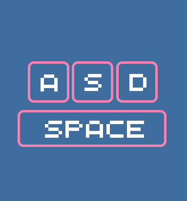
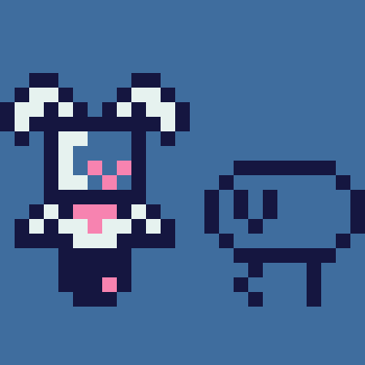
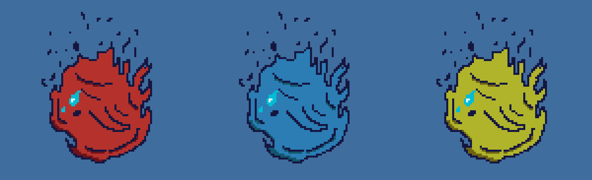
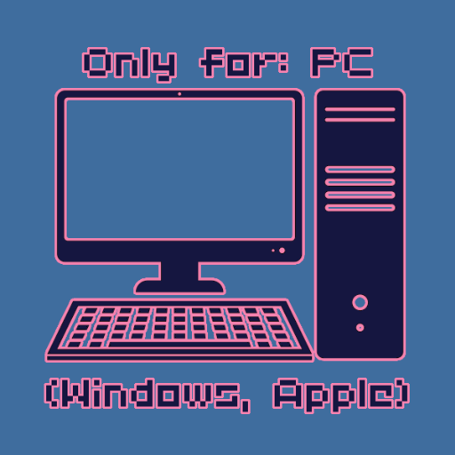

In Synthesis speel je als een klein robotje genaamd: DiDi, op een sombere maar vijandige wereld. De wereld om de
robot heen is een woestenij, maar DiDi kan zich een wereld herinneren met bomen, gras en.. mensen. DiDi’s doel
is om de wereld terug te brengen naar een leefbare status. Dit doet hij door de natuur terug te brengen naar de
wereld, echter blijkt het dat een groot gedeelte van de zaadjes van planten zijn gemuteerd in erg vijandige
monsters. DiDi moet deze monsters bevechten om de originele zaden terug te krijgen zodat hij de aarde weer mooi
en leefbaar kan maken! Als DiDi sneuveld in de strijd tussen de monsters, zal hij zijn zaadjes achter laten op
de
plek waar hij gesneuveld was. Pak ze snel weer op, voordat ze verdwijnen! Misschien dat DiDi er ook achter kan
komen hoe de aarde in deze status is gekomen?
(Exclusief voor Windows en Apple computers).
Afbeelding 1: DiDi in sprite vormAfbeelding 2: DiDi
Subdoelen
Kom er achter wat er is gebeurd met de mensheid en waarom de aarde een post-apocalyptisch landschap is geworden.
Door middel van optionele NPC’s en ‘environmental storytelling’. Verbeter jouw beste tijd om levels te verslaan
en wordt
een echte ‘speed-planter’! Vergelijk jouw tijden met vrienden voor wat vriendelijke competitie.
Afbeelding 3: DiDi in een woestijn
Educatief
Wij willen onze doelgroep leren over de belangrijkheid van biodiversiteit. Dit
doet de speler door flora en fauna terug te brengen in het juiste ecosysteem, in een post-apocalytische
setting. Hierdoor leert de speler hoe divers de ecosystemen op aarde zijn en wat de voorwaarden zijn voor
bepaalde planten om te bloeien, en dieren om te overleven. (Bijv. de speler moet een wilgenboom planten in een
regenachtige locatie zodat hij goed kan groeien.)
Doelgroep
Onze doelgroep is kinderen van 12-13 jaar met het vak Natuur en Techniek. Kinderen houden niet van een 'saaie'
game, ze moeten een game hebben die ze uitdaagt en niet snel verveelt. Veel jongeren spelen tegenwoordig;
Fortnite, Minecraft, Roblox. Daarom maken wij niet een simpele clickergame met als doel om kinderen iets te
leren.
Player Types
Kinderen houden ervan om beloond te worden bijvoorbeeld in Fortnite met een epic victory royale! Dit valt onder
de achievers-categorie van Bartle’s Player Types. In games zoals Minecraft en Roblox kan een kind zo zoveel
experimenteren als zij willen, Minecraft en vooral Roblox zijn grote platformen waarin de community hun eigen
creaties deelt. Wat onder socializers valt en de mensen die deze creaties uit proberen zijn dan weer explorers.
Kort gezegd zijn er boordevol type spelers in onze doelgroep. Mensen zijn complex en niet gelimiteerd aan
één van de player types, de meeste mensen zullen in een game sessie meerdere keren wisselen van player type.
Afbeelding 4: Player Types
Toepassing
In onze game proberen we elke player type aan te spreken. De wereld is gevuld met zaadjes die de speler kan
oppakken, waarvan een gedeelte optioneel is. Zo spreken we de completionst-- oftewel achievers aan die ervan
houden om 100% te zien in games. Voor socializers hebben we een ingame timer die bijhoudt hoe lang de speler
over een level doet. Hier kan je dan met je vrienden over praten en een kleine competitie starten over wie de
beter tijd kan behalen.
Één van de core drives waar wij ons vooral op hebben gefocust is environmental (visual) storytelling. Dit doen
wij door
het verhaal van wat er gebeurd is met de wereld aan de speler te vertellen, zonder het te vertellen. Wij doen
dit door hints achter te laten in de achtergronden van de levels. Zoals bijvoorbeeld een overgebleven rest van
een atoombom. Zo kan de oplettende speler het verhaal zelf interpreteren en hun eigen conclusies trekken.
Ook een grote core drive in de game is 'Progress Lost', zoals benoemd in de mechanics zal je je zaadjes
verliezen
op de dood. Zo forceren we de speler te leren van hun fouten, en de game beter te leren. Game Over gaan is niet
het einde van de wereld. Want je zaadjes zullen niet permanent verloren zijn! Tenzij de speler er te lang over
doet de zaadjes op te pakken..
Afbeelding 7: DiDi naast een atoombom
Mechanics
Movement (Physical Skill)
Synthesis is een platformer dus de hoofdinteractie is dat de speler horizontaal kan lopen en verticaal de lucht
in kan met een sprong. DiDi kan bestuurd worden met een keyboard of met een controller. Keyboard Controls: A -
Links bewegen, S - Beneden bewegen, D - Rechts bewegen, Spatie - Springen.

Afbeelding 8: Keyboard controls
Enemies
De speler heeft in het begin van de game maar drie hit points, mochten die op raken zal je een ‘Game Over’
scherm krijgen. De game is niet echt over daarintegen, op dood laat DiDi alle zaadjes die hij op dat moment op
zich had achter op de plek waar hij gesneuveld. Probeer die dus zo snel mogelijk terug te krijgen, want na een
bepaalde tijd zullen de zaadjes muteren tot een monster.

Afbeelding 9: DiDi naast een vijandige spinAfbeelding 10: HP verliezen
Seeds
De zaadjes die de speler verzamelt moet hij naar het juiste ecosysteem sturen aan het einde van het level. De
speler kan er ook voor kiezen om geen zaadjes te sturen na de ecosystemen maar wie weet wat voor effect dit zal
hebben op de wereld.. Je acties zullen gevolgen hebben.

Afbeelding 11: Verzamelbare zaadjes
Over Ons
Dit project is gemaakt door vier studenten in periode vier voor de studie: Creative Media & Game Technologies op
de Hogeschool Rotterdam. Jany, Sasha, Kevin en Luke. Dit is de eerste keer dat we werken aan een game en hebben
er alle vier een grote passie voor. Jany is een artiest, Sasha een muzikant, Kevin en Luke zijn programmeurs.
Luke heeft ook de pixelart gemaakt voor DiDi.

Afbeelding 12: Synthesis is exclusief voor Windows en Apple computers.Afbeelding 13: DiDi's huidige ontwerp